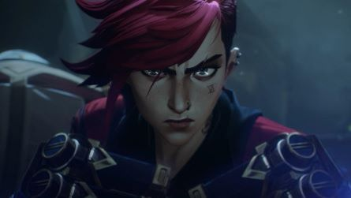
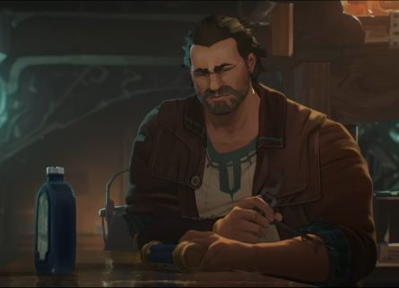
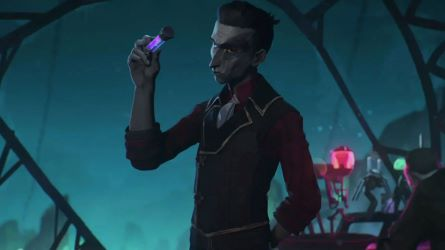
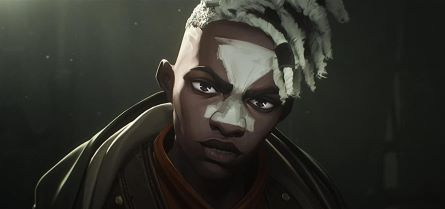
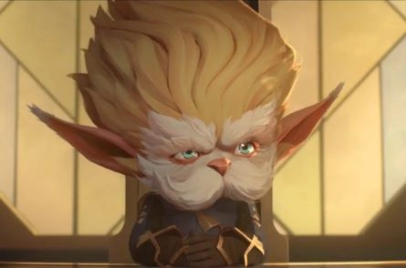

Jinx
Jinx, also known as Powder, is a lead character appearing in Arcane. and an orphaned Zaunite. With her parent's deaths while she was very young, she and her sister Vi were taken in by Vander, the then-de facto leader and protector of the Lanes. When a series of events forces Jinx and her sister apart in more ways than one, she is fundamentally and irrevocably changed.
Voiced by: Ella Purnell

Vi
Violet (commonly known as Vi) is a lead character appearing in Arcane. When her parents were killed by Piltover enforcers, she and her sister Powder were taken in by Vander. After a series of events following a heist gone bad, Vi was separated from her sister and sent to prison, only to be released years later by a recently-dismissed enforcer who needs help hunting down a dangerous Zaunite criminal.
Voiced by: Hailee Steinfeld

Vander
Vander was once the unspoken leader and protector of the undercity. Determined and zealous, Vander did all he could in his later life to ensure the safety of those under his protection—the residents of Zaun and, more specifically, the children he'd taken under his wing. When a series of events forces him to make a choice between an established truce between Zaun and Piltover and his children, Vander's life is turned on its head by his past.
Voiced by: J.B. Blanc
Caitlyn Kiramman
Caitlyn Kiramman is a major character appearing in Arcane. the scion of House Kiramman, one of the wealthiest and most influential families of Piltover. Eager to prove herself from under the powerful shadow and overbearing nature of her parents, Caitlyn joined the Enforcers. With the Sheriff and her parents—for very different reasons—constantly blocking her efforts to further investigate a so-called conspiracy, Caitlyn sets off on her own to find answers and gets more than what she bargained for.
Voiced by: Katie Leung

Silco
Silco was a powerful, ambitious Zaunite, at one point becoming the leader of the chem-barons silently controlling Zaun from under the noses of Piltover's authority.
Voiced by: Jason Spisak
Jayce Talis
Jayce Talis is a scientist and innovator, and, after years of success leading the city's scientific and consequently its economic progress, is currently the Head of the Council of Piltover.
Voiced by: Kevin Alejandro
Mel Merada
Mel Madarda is a noble with a seat on the city council of Piltover. She takes an interest in Jayce's experiments with magic.
Voiced by: Toks Olagundoye
Viktor
The future Machine Herald, a research assistant who decides to throw in his lot with Jayce and his Hextech theory. He's chronically ill from growing up in the toxic atmosphere of Zaun.
Voiced by: Harry Lloyd

Ekko
Ekko is a major character appearing in Arcane. One of many children who grew up in the Lanes. Upon the death of his mentor and disappearance of his friends, Ekko finds a way to survive on his own and help others fight back against Silco's reign over their home.
Voiced by: Reed Shannon

Heimerdinger
Heimerdinger is a renowned and respected figure in Piltover. A scientist, professor, dean, and once the head of Council, Heimerdinger has helped mold the minds of young scholars at the Academy while, having lived for over three centuries, hoping to guide and caution them from the potential risks of magic.
Voiced by: Mick Wingert